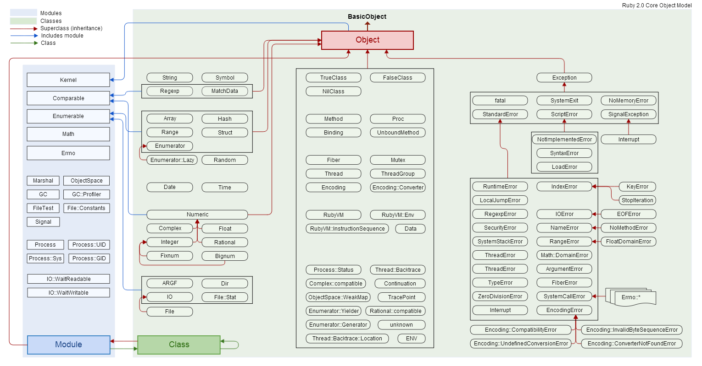

input:output
Welcome to the blog!
Welcome to the blog!
As an object oriented programming language, Ruby gives us a lot of options for solving problems, but keeping track of the different types objects and features of Ruby has been somewhat confusing. The following chart has a lot of information, but for now, but for now just skim the information it presents, and note that there is a large blue box, and a large green box.

We can see that object is at the top of the chart, which makes sense because Ruby is object oriented. Beneath object, the items are colored either blue or green, green represents class, and blue includes modules. To understand the difference the categories, I want to focus on some familiar items in the left third of the chart.
We can see that the left most green column has some familiar Ruby classes, string, array, hash, integer, float and other classes that we have worked with. These are all classes because each instance of these items will contain certain inherited characterisitics. For example, all ARRAYs will inherit an indexed structure, with the first piece of data indexed with the number 0.
Let's continue to look at array to understand the role of modules in Ruby. As you can see in the chart, array and his friends are linked to the blue module box, via enumerable. We have worked with a lot of enumerables before, and I explained how to use the group_by enumberable in a previous post. Enumerable is a module because it can be used across different classes, and is not meant to create instances of itself. Enumerable is a collection of methods that can be used on Arrays, Hashes, other data collections.
In review, if you are creating instances of something, you are working within a class, but if you need a set of methods that could be applicable across a certain class or classes, you might be looking for a module.